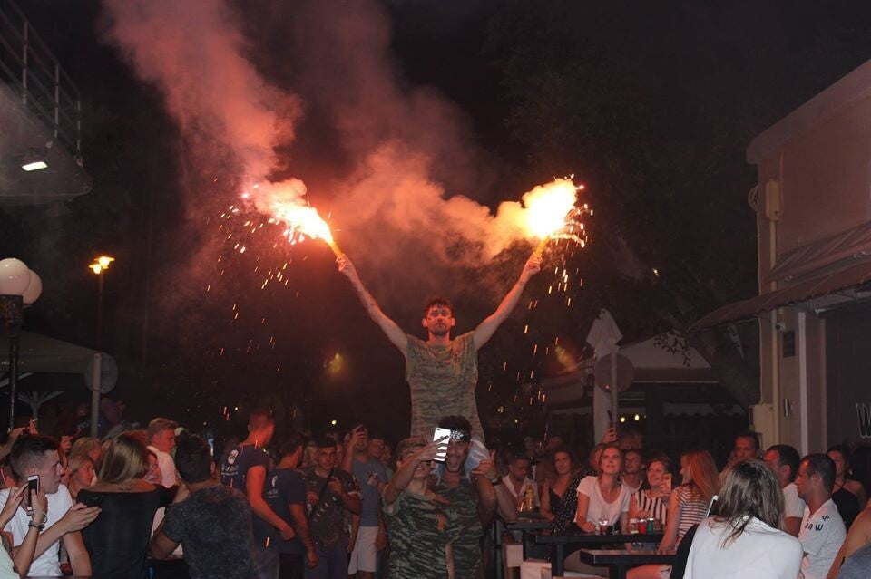
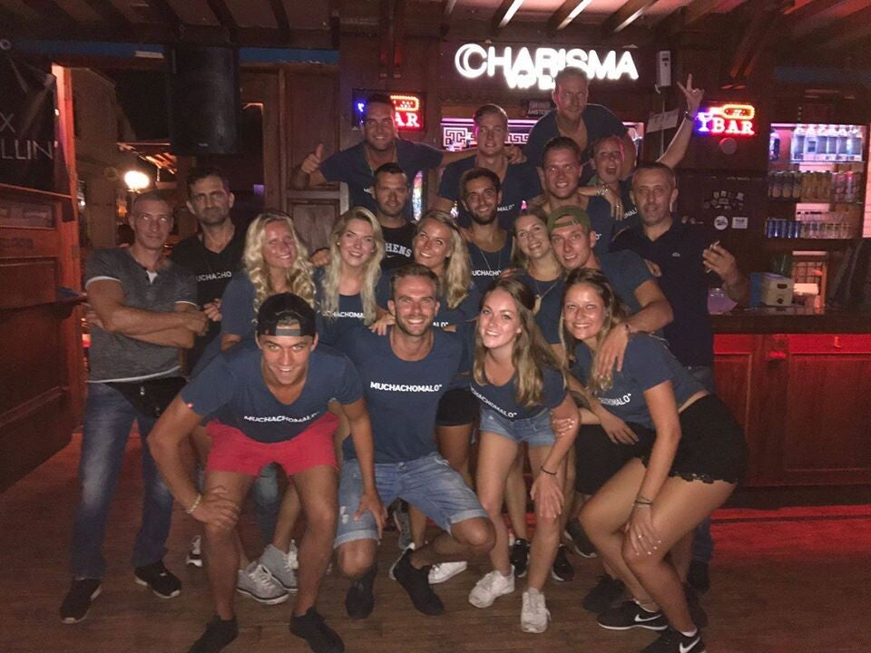
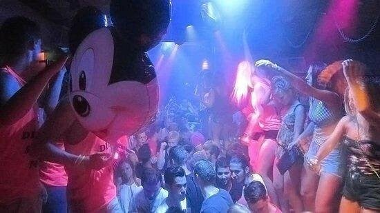
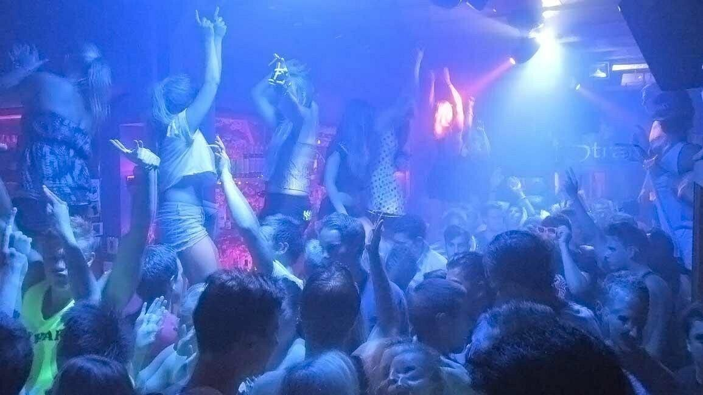
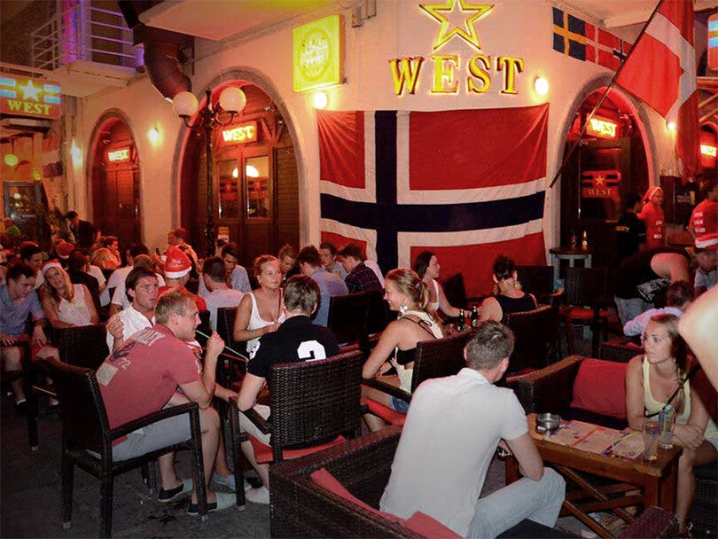
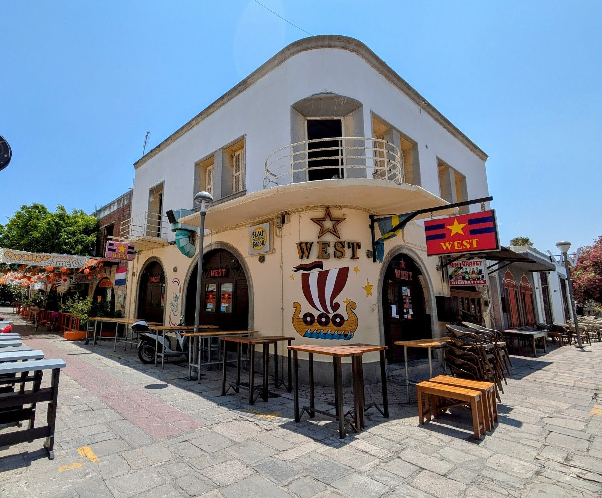

Kos - Rand Centrum
's Nachts open
Barstreet is dé legendarische uitgaansstrip in het hart van Kos-stad, vlakbij de haven en de oude stad. Een kleine, bruisende straat die 's avonds verandert in een kloppend feestgebied.

's Nachts open
Vanaf zonsondergang barst het los met bars, pubs en clubs die tot diep in de nacht openblijven vaak tot 04:00–06:00 uur,

vol met DJ's die mainstream hits, EDM of Griekse remixes draaien, shots, cocktails. Het publiek is vooral jong en met veel mensen die er als toerist zijn, vooral jongeren, met een energieke, feestelijke sfeer.

Barhoppen
Barhoppen is makkelijk, omdat alles op loopafstand ligt. Alle plekken hebben terrasjes. In het hoogseizoen is het het wildst en het drukst; het is betaalbaar en toegankelijk.

Uitbundige vibe
Verwacht een levendige, uitbundige vibe. Perfect voor wie zin heeft in shots, dansen en een nacht die doorgaat tot de ochtend!

Bars in Kos om 02:00 al dicht?
Tot diep in de ochtend
Wat je vaak hoort of zelfs leest op internet, is dat de bars in Barstreet geopend zijn tot 02.00 uur 's nachts. Dit geldt zeker niet voor de Barstreet van Kos-stad. Sommige bars / clubs zijn in het hoogseizoen wel tot 08:00 uur in de ochtend geopend en af en toe in het weekend zelfs nog langer.

